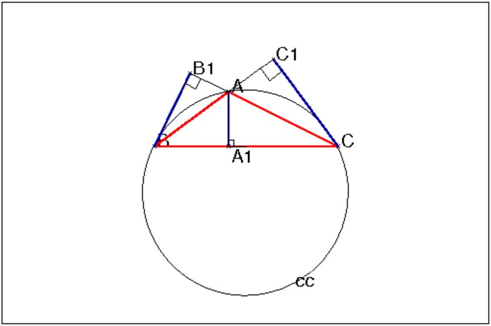
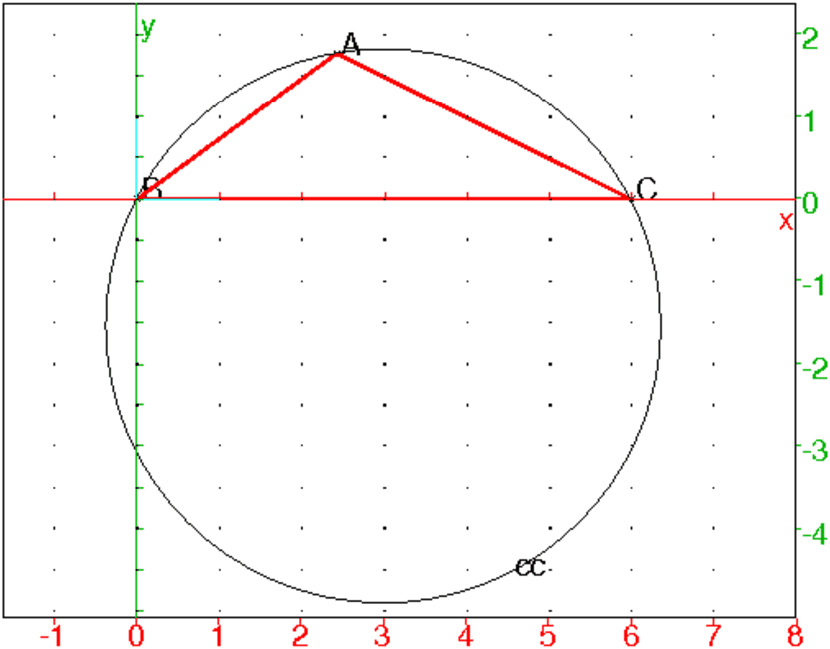
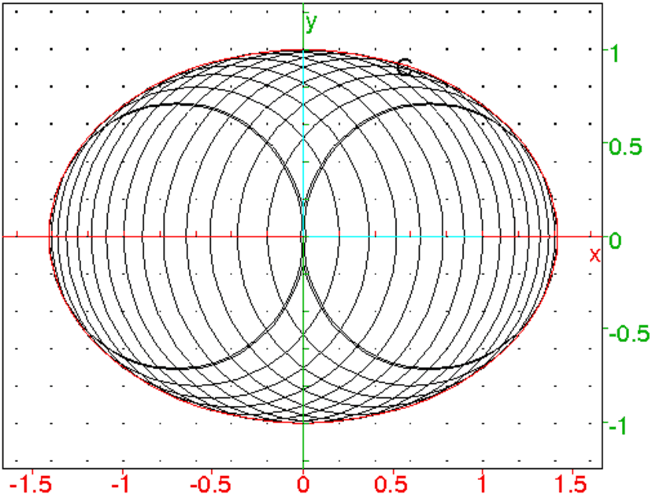
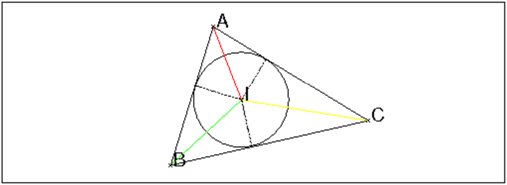

Il s’agit des épreuves que Einstein passe en 1896 à l’age de 17 ans et demi
en Suisse, ce qui est l’équivalent de notre baccalauréat.
À l’époque tous les calculs étaient lons et fastidieux car faits à
l’aide de table
Un triangle inscrit dans un cercle de rayon R=10 a ses hauteurs
proportionnelles à 2, 3 et 4.
Calculer les angles et un côté.
Par hypothèse, il existe k∈ ℝ+ tel que :
hA=2k, hB=3k, hC=4k,
On a :
sin(A)=hB/c=hC/b=3k/c=4k/b
sin(B)=hA/c=hC/a=2k/c=4k/a
sin(C)=hB/a=hA/b=3k/a=2k/b
Donc :
a=2c et b=4c/3 et
a2=c2+b2−2bccos(A)
b2=a2+c2−2accos(B)
c2=a2+b2−2abcos(C)
On fait une figure :

Donc on a:
On sait que :
a/sin(A)=b/sin(B)=c/sin(C)=2R=20 et
Donc on a :
On construit le triangle ABC et on tape :
B:=point(0); C:=point(5*sqrt(455)/6); A:=point(5*sqrt(455)/12*(29/36+i*sqrt(455)/36)); triangle(A,B,C); cc:=circonscrit(A,B,C);
0n tape :
normal(rayon(cc));
On obtient : 10
0n tape :
A1:=projection(droite(B,C),A);
normal(longueur(A,A1));
On obtient : 2275/432
Donc le coefficient de proportionnalité k pour les hauteurs vaut :
2275/864
Si S est l’aire du triangle ABC on a :
2S=ahA=bhB=chc
Par hypothèse, il existe k∈ ℝ+ tel que :
hA=2k, hB=3k, hC=4k donc,
2a=3b=4c c’està dire a=2c et b=4/3c
Le triangle ABC est donc semblable au triangle de côtés :
a=6, b=4, c=3
On sait que le rayon R du cercle circonscrit est égal à :
R=abc/4√p(p−a)(p−b)(p−c) avec 2p=a+b+c.
Avec Xcas, on calcul le rayon du cercle circonscrit au triangle
a=6, b=4, c=3, on tape :
a:=6
b:=4
c:=3
p:=(a+b+c)/2
R:=a*b*c/4/sqrt(p*(p-a)*(p-b)*(p-c))
On obtient :
(72*sqrt(455))/455
On veut avoir que le rayon du cercle circonscrit soit ègale à 10 donc le
triangle cherché est proportionnel au triangle de côtés
a=6, b=4, c=3 avec comme coefficient de proportionnalité :
k= 10√455/72=5√455/36.
Les côtés du triangle cherché sont donc :
BC= 5 √455/6,
AC= 5 √455/9,
AB= 5 √455/12
Les angles de ABC sont les mêmes que les angles du triangle de côtés
a=6, b=4, c=3 donc on a :
2bccos(A)=b2+c2−a2
2accos(B)=a2+c2−b2
2abcos(C)=a2+b2−c2
Avec Xcas, on tape :
A:=evalf(acos((b^2+c^2-a^2)/(2*b*c)))
On obtient :
2.04691538771
On tape :
B:=evalf(acos((a^2+c^2-b^2)/(2*a*c)))
On obtient :
0.634183840824
On tape :
C:=evalf(acos((a^2+b^2-c^2)/(2*a*b)))
On obtient :
0.460493425059
Xcas fait de la géométrie analytique.
On dessine le triangle direct ABC de côtés a=6, b=4, c=3 en mettant
B à l’origine du repère et C sur l’axe des x.
On tape :
B:=point(0); C:=point(6); A:=inter(cercle(0,3),cercle(5,4))[1]; triangle(A,B,C,affichage=1+epaisseur_ligne_2); tA:=angle(A,B,C); tB:=angle(B,C,A); tC:=angle(C,A,B); cc:=circonscrit(A,B,C); R:=rayon(cc);
On obtient :

Avec :
pour tA : atan(((sqrt(455))/2)/(-11/2))+(2*pi)/2
pour tB :atan(((sqrt(455))/2)/(29/2))
pour tC : -(atan(((sqrt(455))/2)/(43/2)))
pour evalf(tA) : 2.04691538771
pour evalf(tB) : 0.634183840824
pour evalf(tC) : 0.460493425059
pour R : (72*sqrt(455))/455
On donne un cercle de rayon r dont le centre se trouve à l’origine O d’un
repère orthonormal.
On considère les cordes de ce cercle perpendiculaires à l’axe des x.
Les cercles ayant ces cordes comme diamètres sont
tangents à l’ellipse de demi-axes r√2 et r, aussi longtemps que la
distance d de leur centre à O ne dépasse pas une certaine valeur
maximale.
Démontrer cette proposition et déterminer la valeur maximale de d.
On considère la corde du cercle centre O et de rayon r qui a pour
abscisse −r≤ a≤ r et qui est perpendiculaire à l’axe des x.
Le cercle de diamètre cette corde a donc pour rayon
√r2−a2 et pour équation :
(x−a)2+y2=r2−a2 ou encore :
x2+y2−2ax+2a2−r2=0
Avec Xcas, on suppose que r=1 et on tape :
ellipse(-1,1,sqrt(2),affichage =1)supposons(a=[0.5,-1/sqrt(2),1/sqrt(2),0.1]); C:=cerle(a,sqrt(1-a^2));
Puis, on fait bouger a en gardant la trace de C (menu M->Trace objet->C).
On obtient :

Nous allons montrer que l’enveloppe de ces cercles est une ellipse de centre
O et de demi-axes r√2 et r (c’est ce que l’on voit sur la figure
ci-dessus).
Le point M=(x,y) de contact du
cercle et de son enveloppe vérifie les équations :
x2+y2−2ax+2a2−r2=0 et
−2x+4a=0 (obtenu en dérivant par rapport à a)
donc M=(2a,√r2−2*a2) ou M=(2a,−√r2−2*a2).
Il faut donc que r2−2*a2≥ 0 soit a≤ r√2/2.
Puisque a=x/2 M est sur la courbe d’équation :
x2+y2−2(x/2)x+2(x/2)2−r2=x2+y2−x2+x2/2−r2=x2+2y2−2r20.
Donc M se déplace donc sur l’ellipse d’équation :
x2+2y2=2r2.
Cette ellipse a pour centre O et pour demi-axes r√2 et r.
Dans un triangle on connait les distance l, m, n du centre du cercle
inscrit aux sommets.
Déterminer le rayon r du cercle inscrit lorsque l=1, m=1/2, n=1/3
Soient le triangle ABC et I le centre de son cercle inscrit.
On pose IA=l, IB=m et IC=n.

On a :
sin(A/2)=r/l=r,
sin(B/2)=r/m=2r,
sin(C/2)=r/n=3r
On sait que A + B + C =π donc
sin(C/2)=sin(π/2−A+B/2)=cos(A+B/2).
On sait que :
A /2<π/2 donc cos(A/2)=√1−r2
B /2<π/2 donc cos(B/2)=√1−4r2
Donc :
sin(C/2)=√1−r2√1−4r2−2r2=3r
r vérifie donc l’équation :
√(1−r2)(1−4r2)=3r+2r2 c’est à dire
(3r+2r2)2−(1−r2)(1−4r2)=0
On tape :
normal((3r+2r^2)^2)-(1-r^2)*(1-4r^2)
On obtient :
12*r^3+14*r^2-1
On tape :
fsolve( 12*r^3+14*r^2-1,r)
On obtient :
[0.243126179572,-0.312313414531,-1.09747943171]
r est positif donc r=0.243126179572.
Si on veut faire le calcul en utilisant la méthode de Newton.
On tape :
g1:=function_diff(g)
g1(x)
On obtient comme dérivé de g(x) :
36*x^2+28*x
Donc la fonction g est croissante sur ℝ+
On tape :
g(x):=12x^3+14x^2-1
plotfunc(g(x),x=-1.5..1)
On obtient :

On a :
donc d’après le théorème des valeurs intermédiaires g a un seul
zéro r sur ℝ+ qui est compris entre 0 et 1/2.
La valeur de r est proche de 1/5=0.2 (c’est l’intersection du segment AB
(A=(0,−1), B=1/2,4) avec l’axe des x)
On peut chercher la solution r de 12x3+14x2−1=0 pour x>0 avec la
méthode de Newton.
On tape :
h(x):=x-g(x)/g1(x)
b:=h(0.2)
On obtient :
0.248863636364
On tape :
b:=h(b)
On obtient :
0.243208102696
On tape :
b:=h(b)
On obtient :
0.243126196656
On tape :
b:=h(b)
On obtient :
0.243126179572
Donc la méthode de Newton donne après 4 itérations :
r=0.243126179572
Remarque
Einstein résout l’équation :
12x3+14x2−1=0 on posant X=A/x et en utilisant les formules de Cardan pour
résoudre : X3−14X−12=0.